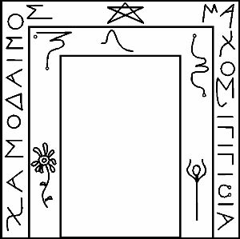

BU ADAR DENİLEN NINIB’IN YEDİNCİ KAPISIDIR:

Ve Yürüyüş Ritüeli burada tasvir edilen formüllerle takip edilmelidir:
İlk önce, arınmak için ay zamanını gözlemlemelisin. Bu zaman içinde, ayın son gününden önce gelen yedi günlük sürede et yiyemezsin ve ayın son gününden önce gelen üç gün süresinde, tatlı su içmek dışında hiçbir şey yiyemezsin. Son üç günde, kendi Tanrın ve Tanrıçana ek olarak, Üç Yüce Yaşlıyı, ANU, ENLIL ve ENKI’yı, uygun büyülü sözleri söyleyerek uyandırmalısın. Ve ANU’nun Sayısı Altmıştır, Kusursuz Sayı, çünkü O Gökyüzünün Babasıdır. ENLIL’in Sayısı Ellidir ve O Rüzgarın Babasıdır. ENKI’nın Sayısı, muhteşem sayı, Kırktır ve o, bu unutulmuş patikalarda dolanan ve bilinmeyen Ülkelerde, Issızlıklar arasında, Azonei’nin korkutucu canavarları ortasında dolaşan bizlerin Babasıdır.
İkinci olarak, önceki ayın otuzuncu gecesinden başlayıp bu ayın otuzuncu Gecesi olması gereken Yürüyüşte, Kapıya huşu ve saygı içinde yaklaşmalısın. Senin Tapınağındaki kötü ruhlar defedildi. Ateşi yakıp Onu, Ateş Tanrısını çağırmalısın ve derhal tütsüler boşaltmalısın. Sunağın üzerindeki İlahlara kurbanlar sunmalısın.
Üçüncü olarak, mangalın alevleri ile, doğru yerlerde duran Gözetleme kulelerinin her birine uygun büyülü sözleri ezberden okuyarak, her bir Yıldızı kendi duaları ile çağırarak dört lambayı yakmalısın.
Dördüncü olarak, çıkartılması söylenen zamana kadar hiç dokunmadığın Kılıcı Toprağa, Yerine saplayarak Gözcünün çağrılışını ezberden okumalısın.
Beşinci olarak, Yıldızın mührünü sağ eline almalı ve üzerine yavaşça onun İsmini fısıldamalısın.
Altıncı olarak, Kuzeyden başlayıp ve Doğuya, sonra Güneye ve Batıya, dönüşlerin sayısı Yıldızın özel Sayısına eşit olacak şekilde, Kapının civarında dairesel usulde yürüyorken, Yürüyüşün Büyülü sözlerini gür ve berrak sesinle ezberden okumalısın.
Yedinci olarak, Kapının merkezine, sunağın önüne geri gelmen gereklidir, o zaman her ne hareket ederse etsin ne sağa ne de sola bakmadan, çünkü bu işlemler pek çok gezgin demonu ve hayaleti Kapılara çekebilir, kendini yere atmalısın. Sunağın üzerinde, havada ise Kapının senin için ve seni berrak sesiyle selamlayan, sana hatırlaman için bir İsim veren, çünkü bu senin, oradan her geçişinde kullanacağın, Kapıyı Geçiş İsmindir, Kürenin Ruh-Haberci için açıldığını göreceksin. Aynı Ruh-Haberci seni karşılayacak ve İsmini bilmiyorsan, senin girişini yasaklayacak ve aniden Toprağa geri düşeceksin.
İlk Kapıdan girildiğinde ve İsim alındığında Toprağa, Tapınağının ortasına düşeceksin. Kapının etrafında, yerde dolanıp duran şu cadı gitmiş olacak. Sunağının üzerindeki Tanrılara şükran dualarına ezberden oku, Gözcünün Kılıcı üzerine bastır, yerinden çıkmış olabilir ve INANNA’nın Yeraltı krallığını nasıl fethettiğini ve KUTULU’yu nasıl mağlup ettiğini anlatan büyülü sözleri söyle. Orada bulunan bütün Idimmu’lar ortadan kaybolacak ve Kapıdan ayrılacak ve böylece Ateşi söndürecek kadar özgür olacaksın.
NANNA’nın Kapısını geçene kadar NANNA’yı çağıramazsın. Onun Kapısını geçene kadar NEBO’yu çağıramazsın. Aynı şey geri kalan Kapılar için de geçerlidir. Işıklar Merdiveninin en ucunu yükseldiğin zaman, Küreler üzerine bilgi ve gücün olacak ve ihtiyaç duyduğun zaman o suretle onları çağırabileceksin. Bu sana ABSU üzerinde bir iktidar vermeyecek, yine de, bu güç farklı biçimde İniş Ritüeli ile elde edilir. Bu ritüele ayın otuzuncu gününden sonraki on beşinci günde, açmak üzere MARDUK’un Kapısını çağırdığında teşebbüs edeceksin. Çünkü MARDUK Hayaletleri yolundan saptırır ve On beşin Tanrıçası INANNA da onlardan bazılarının hala ikamet ettiği Alttaki dünyayı fethetti. Bu çok tehlikeli bir Ritüeldir ve Çukurun içindeki dördüncü kapıya cesaret etmeden önce, reçete edildiği gibi MARDUK’un Kapısını geçmek dışında, önceki Kapılarının hepsini ister geçmiş isterse geçmemiş olsun, formülleri bilen herhangi biri tarafından teşebbüs edilebilir. Bu nedenle, çok az kişi ADAR’ın Kapısını açabilmiş ve orada ikamet eden ve ölülerle konuşma ve ölümü çabuklaştırma işlemleri hakkındaki bilgeliklerin usulünü veren Boynuzlu ile konuşabilmiştir. Gücünü yalnızca Maskim ve Rabishuya gösterdiğinde IGIGI’nın Ülkesine ilerlemeye cesaret edebilirsin ve bu Akit de bu yüzden, kimse MARDUK’a yükselmeden Ölülerin batık vadileri boyunca güven içinde Yürüyemediği ve de Deli Tanrının Alametini görene ve cehennemi Kraliçenin hiddetini hissedene kadar ADAR’ın ötesindeki Kapıları aralamadığı için yapılmıştır.
Ve Kadimlere karşı, bir tek savunma vardır. Yalnızca bir deli, aslında, tıpkı bana denildiği gibi!, Dış Uzayda ikamet eden, Onlar üzerinde güç sahibi olabilir, çünkü onların gücü bilinmezdir ve sürülerinin çokluğu sayılamaz ve her gün bir insanın kavrayabileceğinden, gördüğü zaman katlanabileceğinden daha çok korkular büyütürler. Dışarıya açılan Kapının uzun süre açık kaldığı bir zaman vardı ve ben kelimelerin anlatamadığı, yazmanın sadece karmaşıklaştırdığı vurucu korkuya şahit oldum. İç Dünyaya kaçmış olan Kadim çok güçlü bir majisyen tarafından Kapıdan, sadece Adanın köyleri ve hayvan sürülerinin büyük bir kısmı zayi olduktan sonra gerisin geri püskürtüldü. Koyunların pek çoğu doğal olmayan yollarla öldürülmüş ve pek çoğu yenmişti ve pek çok Bedevi aklını yitirdi, çünkü akıl ne gösterilirse onu algılar, ancak Kadimlerin görüntüsü bir insanın en sıradan duyularına bile küfür gibi gelir, çünkü gelen şey dosdoğru değil, dalavereci bir dünyadan gelmiştir ve onların varoluşu doğal olmayan biçimlerde ve göze ve akla acı verecek türdendir ki bununla ruh korkar ve kaçmakta olan bedenden yavaşça çekilir. Böylelikle ürkütücü ‘utukku xul’ bedeni ele geçirir ve Rahip onları geldikleri yere defedene ve normal ruh sabık çevresine geri dönene kadar orada kalır.
Ve orada ALLU’lar, Yırtıcı Tanrıların Habercileri ve insan kemikleri çiğneyen demonların hepsi vardır. Ve Rahibi, İçerdeki güçler üzerinde hakimiyet elde edene kadar, Dışarının Kadimleri aleyhine gayret gösterme arzusuna karşı uyarmak dışında, zikredilmeleri için burasının uygun yer olmadığı daha başkaları da vardır. Yalnızca ADAR ele geçirildiğinde Rahip, Küre seviyelerinin hakimi olarak görebilir ve Yaşlı tanrılarla güreş tutmaya muktedir olur. Bir kez Ölümün Gözü içine bakıldı mı, Rahip ondan sonra Ölümün karanlık perdeli salonlardaki varlıkları çağırarak kontrol altına alabilir. Ondan sonra Kapıyı korkmadan ve insanları öldüren ruhtan iğrenmeden açabilir.
Bundan sonra, saçlarını çekerek ve ellerini sıkarak ve Geceleyin havada çığlıklar atıp çirkin İsimler sıralayarak akla ve bedene musallat olan demonlar üzerinde güç sahibi olmayı umabilir.
Çünkü Rüzgarla gelen, yalnızca Rüzgarı bilen tarafından öldürülebilir ve denizle gelen yalnızca Suları bilen tarafından öldürülebilir. Kadim Akitte yazılan budur.